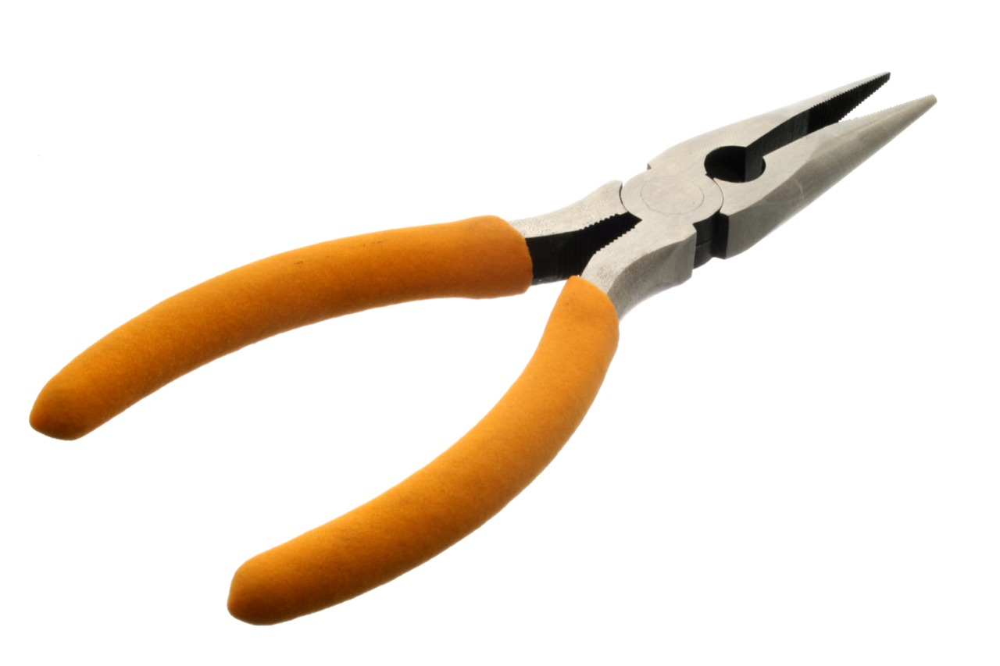
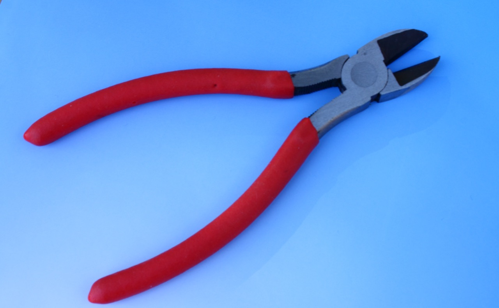
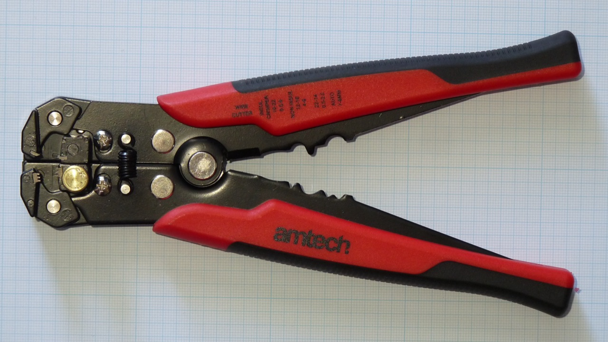
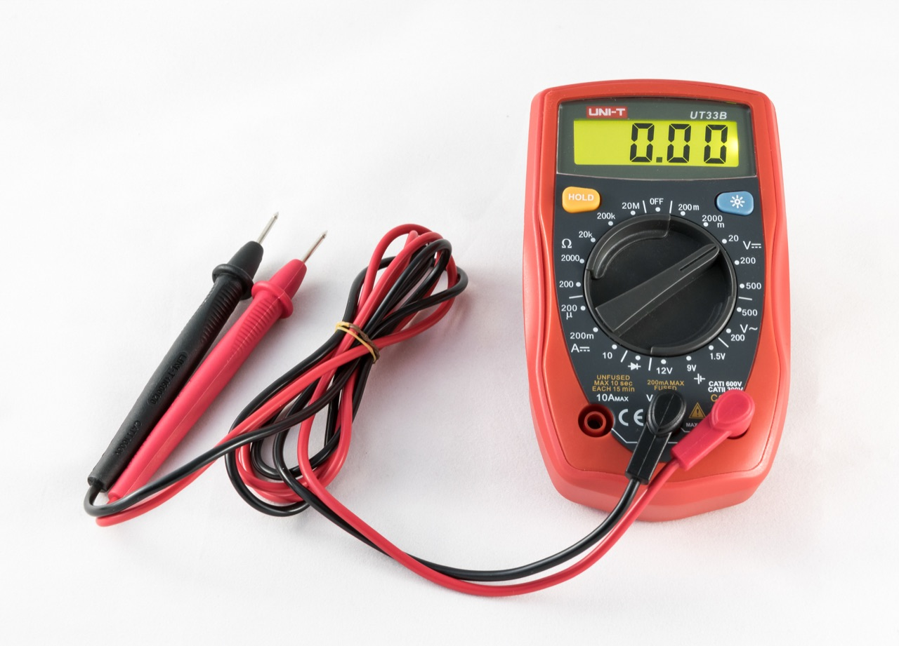
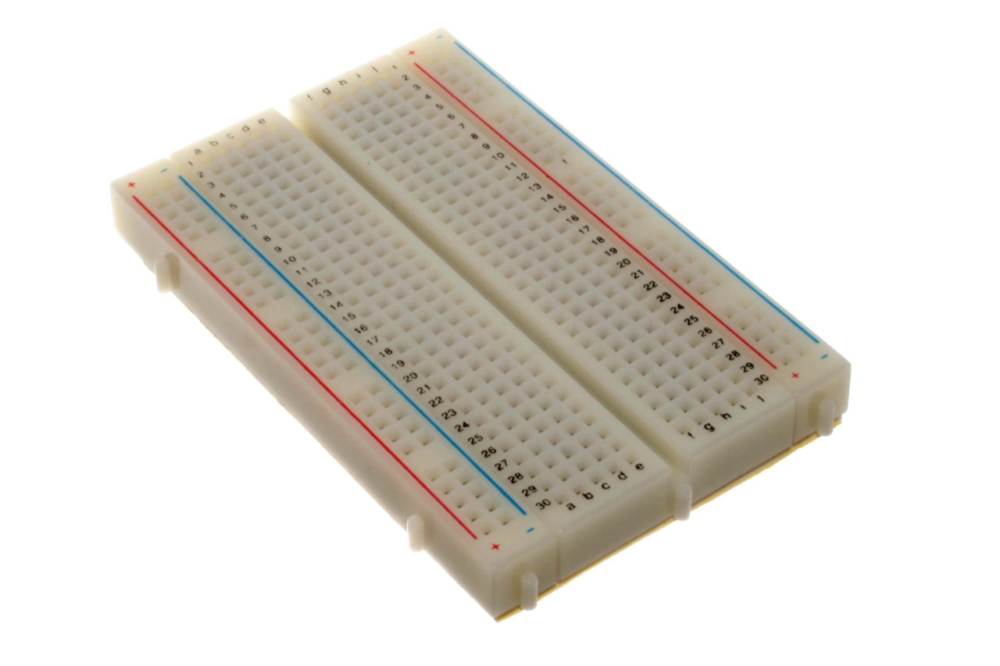

常用工具與量測
工欲善其事,必先利其器。要完成一項電子製作,掌握正確的工具與使用方法,是成功的第一步。
常見手工具
尖嘴鉗
夾持細小零件、彎折元件的腳位。焊接時導線會導熱,善用尖嘴鉗夾持可避免燙傷。
斜口鉗
剪斷導線或零件接腳。刀口斜面設計可貼近電路板,方便焊接後修剪,成品更美觀。
剝線鉗
剝除電線的絕緣外皮,露出內部導體。使用時應依「線徑」選擇正確孔位,以免剪斷銅線。



使用電烙鐵與焊錫進行焊接時,務必戴護目鏡(需要時才戴貼手的耐熱手套,不要戴厚棉手套握烙鐵;夾持剛焊好的燙件用鑷子或尖嘴鉗),保持通風避免吸入焊錫煙霧; 操作後務必將電烙鐵放回烙鐵架上,避免燙傷。使用含鉛錫時,焊接區不飲食,焊完一定要洗手(戴過手套也要洗)。確實執行安全操作,是負責任的製作者基本素養。
量測工具:三用電表
三用電表(簡稱 VOM,又稱萬用電表)是電子技術人員必備的基本儀表, 分為指針型與數位型兩類。它的主要功能是測量:交流／直流電壓(ACV／DCV)、 電阻值(Ω),以及直流電流(DCmA)。

- 若不知道待測物理量的大小,應先把檔位切到大範圍,再逐項往小範圍檢測。
- 這樣能避免量測值超過範圍而損壞電表。
- 測電壓用 V 檔、測電阻用 Ω 檔、測電流用 A 檔——選錯檔位可能燒毀電表。
用三用電表量測電壓、電阻、電流
右側有一個簡單電路(9V 電池 + 4.7kΩ + 10kΩ 串聯,中間有節點 A、B、C)。 選擇電表檔位、把紅黑探棒放到不同節點,看電表讀數。挑戰:用電壓檔分別測 R1 與 R2 兩端電壓, 確認加總是否等於電池電壓(克希荷夫電壓定律)。
點一個孔,看看哪些孔跟它「相通」
麵包板不需焊接就能插上元件。但要會用它,得先搞懂「哪些孔在電路上是相通的」。 點擊任何一個孔,平台會把與它電氣相通的所有孔一起標亮。

麵包板的連通規則
・中間區域:每一直行的 5 個孔「縱向相通」;上下兩半(a–e 與 f–j)被中央溝槽隔開,互不相通。
・上下的電源軌:「橫向相通」,通常一條接正電源(紅)、一條接地(黑)。有些麵包板(常見於 830 孔)的電源軌在中間斷成兩段,看紅藍線有沒有中斷,不確定就用三用電表量或拉跳線跨接。
搞懂連通規則,才能正確地把元件接成電路——這對理解電路與配線非常重要。